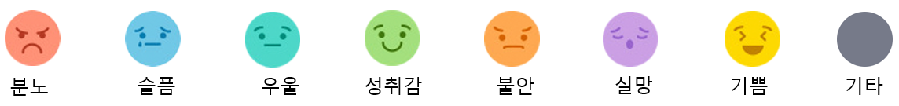

page15
SESSION 5
생각의 습관에서 자유로워지다
자동사고 기록지
1. 상황
언제 :
어디서 :
무엇을 어떻게 :
2. 감정
가장 강렬했던 감정으로 고르고 점수를 기록해 주세요(1~10점)
3. 어떤 생각이 떠올랐나요? (상황에 대한 생각)
4. 최악의 경우, 어떤 일이 일어날 것이라는 생각이 들었나요? (생각으로 인한 결과)
5. 그때 떠오른 이미지는?

6. 내가 어떤 사람으로 보여질까?